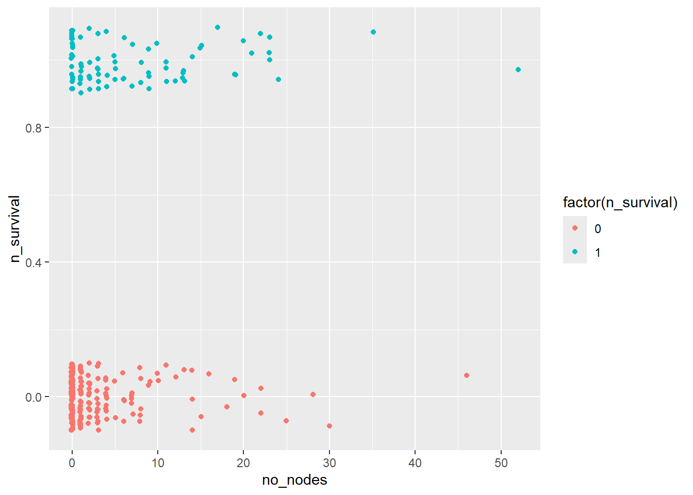

# install.packages("glm2")
library(glm2)Regression
Non-linear Regression
Pre-class video
- Eng ver.
- Kor ver.
- Pre-class PPT pdf
Discussion
Discussion #7
Class
Motivation
In many real-world applications, the relationship between the dependent variable and independent variables is not always linear. Non-linear regression is a versatile tool that can be used to model complex relationships between variables, allowing for a more accurate representation of the underlying processes.
Theory
Non-linear regression seeks to find the best-fit curve or surface through the data points by minimizing the sum of the squared residuals, which represent the difference between the observed and predicted values. The general form of a non-linear regression model can be written as:
\[ y = f(x, β) + ε \]
where y is the dependent variable, x is the independent variable, β represents the vector of parameters to be estimated, f(x, β) is the non-linear function, and ε is the error term.
Generalized Linear Model (GLM)
GLM stands for Generalized Linear Model in R. It is a flexible extension of the ordinary linear regression that allows for response variables with error distribution models other than the normal distribution, such as the binomial or Poisson distributions. The GLM is used to model the relationship between a response variable and one or more predictor variables by combining a linear predictor function with a specified probability distribution for the response variable.
The glm() function in R is used to fit generalized linear models, and its general syntax is:
glm(formula, data, family)
where:
formula: A symbolic description of the model to be fitted, such as y ~ x1 + x2. data: A data frame containing the variables in the model. family: A description of the error distribution and link function to be used in the model. Common choices include binomial, poisson, and gaussian. The link function, which can be specified using the link argument within the family function, determines how the expected value of the response variable is related to the linear predictor function. Examples of link functions are logit, probit, and log.
The GLM can be applied to various types of regression problems, including linear regression, logistic regression, and Poisson regression, by specifying the appropriate distribution family and link function. This versatility makes the GLM a powerful and widely used tool for modeling relationships between variables in various fields.
Then, what is the difference btw GLM & LM? See the link below.
The Difference Between glm and lm in R
Logit Model (A representative model in GLM)
Logistic regression, specifically the logit model, is a popular technique for handling non-linear dependent variables, allowing us to predict the probability of an event occurring given a set of input variables.
\[ P(Y=1) = \frac{1}{(1 + exp(-z))} \] where z is a linear function of the predictor variables: \[ z = β_0 + β_1X_1 + β_2X_2 + ... + β_kX_k \]
The logit transformation, which is the log-odds of the probability, is given by:
\[ logit(P(Y=1)) = \log{\frac {P(Y=1)}{P(Y=0)}} = z \] The coefficients \((β_0, β_1, ... β_k)\) are estimated using maximum likelihood estimation, which seeks to maximize the likelihood of observing the data given the logistic model.
Let’s use R to fit a logit model to a simple dataset. First, we will check if the required library is installed, and if not, install and load it:
Next, let’s create a synthetic dataset for our example:
set.seed(42)
x1 <- runif(100, 0, 10)
x2 <- runif(100, 0, 10)
z <- 0.5 + 0.7 * x1 - 0.3 * x2
p <- 1 / (1 + exp(-z))
y <- ifelse(p > 0.5, 1, 0)
data <- data.frame(x1, x2, y)Here, we have generated 100 data points with two predictor variables, x1 and x2, and a binary outcome variable, y.
Now, let’s fit the logit model using the glm() function:
model <- glm(y ~ x1 + x2, data = data, family = binomial(link = "logit"))Warning: glm.fit: algorithm did not convergeWarning: glm.fit: fitted probabilities numerically 0 or 1 occurredTo view the estimated coefficients, we can use the summary() function:
summary(model)
Call:
glm(formula = y ~ x1 + x2, family = binomial(link = "logit"),
data = data)
Deviance Residuals:
Min 1Q Median 3Q Max
-7.710e-05 2.100e-08 2.100e-08 2.100e-08 5.952e-05
Coefficients:
Estimate Std. Error z value Pr(>|z|)
(Intercept) 39.06 32579.11 0.001 0.999
x1 31.28 11604.28 0.003 0.998
x2 -15.17 8369.54 -0.002 0.999
(Dispersion parameter for binomial family taken to be 1)
Null deviance: 7.7277e+01 on 99 degrees of freedom
Residual deviance: 1.3375e-08 on 97 degrees of freedom
AIC: 6
Number of Fisher Scoring iterations: 25To make predictions on new data, we can use the predict() function:
new_data <- data.frame(x1 = c(5, 7), x2 = c(3, 9))
new_data x1 x2
1 5 3
2 7 9predicted_prob <- predict(model, newdata = new_data, type = "response")
predicted_prob1 2
1 1 predicted_class <- ifelse(predicted_prob > 0.5, 1, 0)
predicted_class1 2
1 1 Second practice with another dataset
Let’s use haberman dataset
library(tidyverse)── Attaching core tidyverse packages ──────────────────────── tidyverse 2.0.0 ──
✔ dplyr 1.1.1 ✔ readr 2.1.4
✔ forcats 1.0.0 ✔ stringr 1.5.0
✔ ggplot2 3.4.2 ✔ tibble 3.2.1
✔ lubridate 1.9.2 ✔ tidyr 1.3.0
✔ purrr 1.0.1
── Conflicts ────────────────────────────────────────── tidyverse_conflicts() ──
✖ dplyr::filter() masks stats::filter()
✖ dplyr::lag() masks stats::lag()
ℹ Use the conflicted package (<http://conflicted.r-lib.org/>) to force all conflicts to become errorshaberman<-read.csv("https://archive.ics.uci.edu/ml/machine-learning-databases/haberman/haberman.data", header=F)
names(haberman)<-c("age", "op_year", "no_nodes", "survival")
glimpse(haberman)Rows: 306
Columns: 4
$ age <int> 30, 30, 30, 31, 31, 33, 33, 34, 34, 34, 34, 34, 34, 34, 35, 3…
$ op_year <int> 64, 62, 65, 59, 65, 58, 60, 59, 66, 58, 60, 61, 67, 60, 64, 6…
$ no_nodes <int> 1, 3, 0, 2, 4, 10, 0, 0, 9, 30, 1, 10, 7, 0, 13, 0, 1, 0, 0, …
$ survival <int> 1, 1, 1, 1, 1, 1, 1, 2, 2, 1, 1, 1, 1, 1, 1, 1, 1, 1, 1, 1, 1…The Haberman dataset, also known as the Haberman’s Survival dataset, is a dataset containing cases from a study conducted between 1958 and 1970 at the University of Chicago’s Billings Hospital on the survival of patients who underwent surgery for breast cancer. The dataset is often used for classification and data analysis tasks in machine learning and statistics.
The Haberman dataset contains 306 instances (rows) and 4 attributes (columns). The attributes are:
Age: The patient’s age at the time of the operation, represented as an integer.
Year: The year of the operation, represented as an integer from 58 (1958) to 69 (1969).
Nodes: The number of positive axillary nodes detected, represented as an integer. A positive axillary node is a lymph node containing cancer cells. A higher number of positive axillary nodes generally indicates a more advanced stage of cancer.
Status: The survival status of the patient, represented as an integer. A value of 1 indicates that the patient survived for 5 years or longer after the surgery, while a value of 2 indicates that the patient died within 5 years of the surgery.
Response var: Survival in 5 years
The goal of analyzing the Haberman dataset is usually to predict a patient’s survival status based on the other three attributes (age, year, and nodes). This is typically treated as a binary classification problem, with survival status as the dependent variable and the other attributes as independent variables. Various machine learning algorithms, including logistic regression, support vector machines, and decision trees, can be applied to this dataset for predictive modeling and analysis.
table(haberman$survival)
1 2
225 81 prop.table(table(haberman$survival))
1 2
0.7352941 0.2647059 haberman %>% mutate(n_survival=ifelse(survival==2,1,0)) %>% head age op_year no_nodes survival n_survival
1 30 64 1 1 0
2 30 62 3 1 0
3 30 65 0 1 0
4 31 59 2 1 0
5 31 65 4 1 0
6 33 58 10 1 0haberman %>% mutate(n_survival=ifelse(survival==2,1,0)) %>% select(-survival) -> haberman
summary(haberman) age op_year no_nodes n_survival
Min. :30.00 Min. :58.00 Min. : 0.000 Min. :0.0000
1st Qu.:44.00 1st Qu.:60.00 1st Qu.: 0.000 1st Qu.:0.0000
Median :52.00 Median :63.00 Median : 1.000 Median :0.0000
Mean :52.46 Mean :62.85 Mean : 4.026 Mean :0.2647
3rd Qu.:60.75 3rd Qu.:65.75 3rd Qu.: 4.000 3rd Qu.:1.0000
Max. :83.00 Max. :69.00 Max. :52.000 Max. :1.0000 par(mfrow=c(1,3))
plot(density(haberman$age))
plot(density(haberman$op_year))
plot(density(haberman$no_nodes))
par(mfrow=c(1,3))
boxplot(haberman$age)
boxplot(haberman$op_year)
boxplot(haberman$no_nodes)corr <- round(cor(haberman), 2)
corr age op_year no_nodes n_survival
age 1.00 0.09 -0.06 0.07
op_year 0.09 1.00 0.00 0.00
no_nodes -0.06 0.00 1.00 0.29
n_survival 0.07 0.00 0.29 1.00library(ggcorrplot)
ggcorrplot(corr, method = "circle")
par(mfrow=c(2,2))
plot(haberman$age, haberman$n_survival)
plot(haberman$op_year, haberman$n_survival)
plot(haberman$no_nodes, haberman$n_survival)haberman %>% ggplot(aes(x=age, y=n_survival)) + geom_jitter(aes(col=factor(n_survival)), height=0.1, width=0.1)haberman %>% ggplot(aes(x=op_year, y=n_survival)) + geom_jitter(aes(col=factor(n_survival)), height=0.1, width=0.1)
haberman %>% ggplot(aes(x=age, y=n_survival)) + geom_jitter(aes(col=factor(n_survival)), height=0.1, width=0.1)
Fit the data to the simple linear model
linear.model<-glm("n_survival~.", data=haberman)
summary(linear.model)
Call:
glm(formula = "n_survival~.", data = haberman)
Deviance Residuals:
Min 1Q Median 3Q Max
-1.0177 -0.2388 -0.1942 0.3879 0.8676
Coefficients:
Estimate Std. Error t value Pr(>|t|)
(Intercept) 0.103030 0.476429 0.216 0.829
age 0.003577 0.002259 1.583 0.114
op_year -0.001563 0.007496 -0.209 0.835
no_nodes 0.017963 0.003381 5.313 2.1e-07 ***
---
Signif. codes: 0 '***' 0.001 '**' 0.01 '*' 0.05 '.' 0.1 ' ' 1
(Dispersion parameter for gaussian family taken to be 0.179504)
Null deviance: 59.559 on 305 degrees of freedom
Residual deviance: 54.210 on 302 degrees of freedom
AIC: 348.79
Number of Fisher Scoring iterations: 2Fit the data to the generalized linear model
logit.model<-glm("n_survival~.", data=haberman, family="binomial")
summary(logit.model)
Call:
glm(formula = "n_survival~.", family = "binomial", data = haberman)
Deviance Residuals:
Min 1Q Median 3Q Max
-2.3219 -0.7297 -0.6552 0.9230 1.9600
Coefficients:
Estimate Std. Error z value Pr(>|z|)
(Intercept) -1.861625 2.675197 -0.696 0.487
age 0.019899 0.012735 1.563 0.118
op_year -0.009784 0.042013 -0.233 0.816
no_nodes 0.088442 0.019849 4.456 8.36e-06 ***
---
Signif. codes: 0 '***' 0.001 '**' 0.01 '*' 0.05 '.' 0.1 ' ' 1
(Dispersion parameter for binomial family taken to be 1)
Null deviance: 353.69 on 305 degrees of freedom
Residual deviance: 328.26 on 302 degrees of freedom
AIC: 336.26
Number of Fisher Scoring iterations: 4Odds ratio!
exp(logit.model$coefficients)(Intercept) age op_year no_nodes
0.1554198 1.0200987 0.9902638 1.0924714 exp(cbind(OR = coef(logit.model), confint(logit.model)))Waiting for profiling to be done... OR 2.5 % 97.5 %
(Intercept) 0.1554198 0.000794884 29.367796
age 1.0200987 0.995033131 1.046136
op_year 0.9902638 0.911586214 1.075310
no_nodes 1.0924714 1.052631312 1.137984newdata<-data.frame(age=c(10,20,30), op_year=c(40,50,60), no_nodes=c(1,3,5))
newdata age op_year no_nodes
1 10 40 1
2 20 50 3
3 30 60 5Prediction
predict(linear.model, newdata) 1 2 3
0.09422042 0.15027781 0.20633519 type of prediction is a predicted probability (type=“response”).
predict(logit.model, newdata, type = "response") 1 2 3
0.1228683 0.1561044 0.1963186